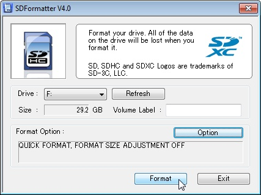
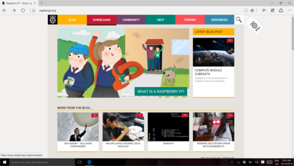
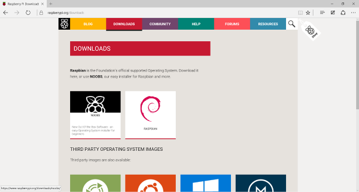
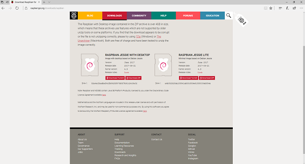
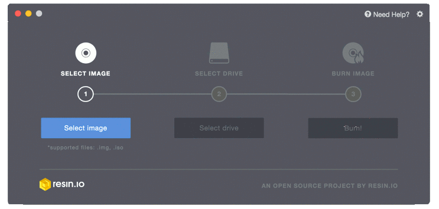

Licenca
To delo je na voljo pod pogoji slovenske licence Creative Commons 2.5:
priznanje avtorstva - nekomercialno - deljenje pod enakimi pogoji.
Celotna licenca je na voljo na spletu na naslovu http://creativecommons.org/licenses/by-nc-sa/2.5/si/. V skladu s to licenco je dovoljeno vsakemu uporabniku delo razmnoževati, distribuirati, javno priobčevati, dajati v najem in tudi predelovati, vendar samo v nekomercialne namene in ob pogoju, da navede avtorja oziroma avtorje in izdajatelja tega dela. Če uporabnik delo predela, kar pomeni, da ga spremeni, preoblikuje, prevede ali uporabi to delo v svojem delu, lahko predelavo dela ponudi na voljo le pod pogoji, ki so enaki pogojem iz te licence oziroma pod enako licenco.

Prenos in namestitev NOOBS
Torej imaš Malino, na katero je priklopljena vsa potrebna oprema. Kaj pa zdaj? Čas je, da namestiš operacijski sistem in ga zaženeš ter začneš uporabljati Malino.
Prenos operacijskega sistema
Priporočeni operacijski sistem za uporabo z Malino se imenuje Raspbian. Raspbian je različica GNU/Linux, ki je zasnovana tako, da posebej dobro deluje z Malino. Obstaja več možnosti, kako dobiti kopijo operacijskega sistema Raspbian.
Nakup pred-nameščene kartice SD
Najlažji način, da dobiš NOOBS ali Raspbian, je nakup kartice SD s programsko opremo, ki je že nameščena.
Namestitev Raspbiana z možnostjo NOOBS
NOOBS pomeni New Out Of Box Software in je najboljše način za začetek, če se še nikoli prej nisi srečal/-a z GNU/Linux. Vedno je dobro najprej formatirali svojo kartico SD. Za to dejanje potrebuješ bralnik kartic SD, ki je vgrajen v računalnik ali pa priklopljen na računalnik preko vhoda USB.
- Obišči spletno stran združenja SD in prenesi SD Formatter 4.0 za Windows ali Mac.
- Sledi navodilom namestitve programa in namesti program.
- Vstavi kartico SD v bralnik kartic in si zapomni črko pogona, s katero je povezan bralnik kartic, na primer
F:/. - V programi SD Formatter izberi črko pogona kartice SD in jo formatiraj.

Prenos NOOBS datotek
- Obišči uradno spletno stran prenosov za Malino.
 - Klikni NOOBS.
 - Klikni gumb Download ZIP pod »NOOBS (offline and network install)« in izberi mapo, v katero želiš datoteko shraniti.
- Razširi zip datoteko (datoteke bodo v mapi NOOBS).
- Ko bo kartica SD formatirana, odvleci vse datoteke iz mape NOOBS in jih spusti na pogon kartice SD.
- Datoteke se bodo nato prekopirale na kartico SD.
- Ko bo postopek končan, varno odstrani kartico SD in jo vstavi v Malino.
Neposreden prenos slike operacijskega sistema Raspbian
Namesto da uporabiš NOOBS lahko operacijski sistem Raspbian neposredno preneseš in na kartico SD namestiš njegovo sliko. To je hitrejši postopek in je zelo primeren, če moraš pripraviti več kartic za delavnico ali razred.
- Uporabi računalnik, ki ima bralnik kartic SD in obišči uradno spletno stran prenosov za Malino.
- Klikni Raspbian.
- Klikni gumb Download ZIP pod »Raspbian Jessie with desktop« in izberi mapo, v katero želiš datoteko shraniti.
- Razširi zip datoteko.
 - Obišči etcher.io ter prenesi in namesti Etcher pripomoček za slike kartic SD.
- Zaženi Etcher in izberi sliko Raspbian, ki si jo razširil iz zip datoteke.
- Izberi pogon kartice SD. Upoštevaj, da je program morda že izbral pravi pogon.
- Končno klikni gumb Burn za prenos operacijskega sistema Raspbian na kartico SD. Med postopkom prenosa bo vidna vrstica napredka, ki bo prikazovala, koliko časa bo postopek še trajal. Ko bo postopek končan, bo pripomoček samodejno izvrgel/odklopil kartico SD, da jo bo mogoče varno odstraniti iz računalnika.

Prvi priklop Maline
Zdaj, ko imaš operacijski sistem, lahko kartico SD vstaviš v Malino in jo priključiš na napajanje.
- Če uporabljaš NOOBS in prvič uporabljaš kartico SD ob zagonu Maline, boš moral/-a izbrati operacijski sistem in pustiti, da se operacijski sistem namesti. To lahko traja nekaj časa (glej spodnjo animacijo).

- Če si s pomočjo programa Etcher prenesel/-a sliko operacijskega sistema Raspbian na kartico SD, potem se bo ob zagonu prikazalo namizno okolje Rasbian in ti ne bo treba čakati.